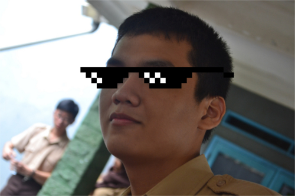
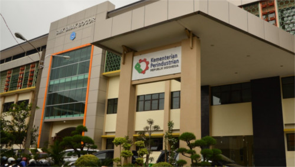

Perkenalan

Здравствуйте! Ini adalah page pribadi dari Cahya Adi Ramadhan, seorang pelajar sekolah analis kimia yang abstrak, eksentrik, tetapi mempunyai keinginan untuk mengubah dunia ini.
Lahir pada tanggal 3 Desember 2000. Anak terakhir dari 4 bersaudara. Dari hasil tes MBTI (Myer-Briggs Type Identification), saya adalah ENTP (Extroverted, Intuitive, Thinking, Perceiving). Menyukai hal-hal berbau sains dan ilmiah terutama astronomi. Walaupun saya terlihat tidak pernah melakukan pekerjaan dengan benar, sebenarnya saya adalah orang yang sangat serius dan tekun apabila saya benar-benar tertarik untuk melakukan pekerjaan tersebut.
Sekolah

Bersekolah di SMK-SMAK Bogor, sebuah sekolah analis kimia di mana orang-orang ingin bersekolah di situ tetapi setelah beberapa bulan belajar mereka akan mengatakan "Up Gan!". Saya berada di kelas paling unik, aneh, dan tidak biasa yaitu kelas XI-7. Kelas tersebut berisi orang-orang dengan berbagai macam latar belakang, mulai dari yang sangat rajin sampai yang sangat nyentrik seperti saya.
Keluarga
Keluarga saya terdiri dari 1 ayah, 1 ibu, 2 kakak laki-laki, 1 kakak perempuan, dan seekor kucing. Kenapa saya menyebut kucing peliharaan saya sebagai anggota keluarga? Berikut alasannya:
- Dia bertingkah seperti layaknya anak kecil.
- Makanannya spesial dibuat oleh anggota keluarga saya (terutama kakak perempuan saya).
- Wajahnya lucu (ini alasan tidak jelas)
Hobi
- Membaca: Saya mulai gemar membaca sejak berumur 6 tahun.
- Menggambar: Dimulai dari menggambar coretan di tembok saat 4 tahun, saya mulai menekuninya.
- Gaming: Sejak kelas 2 SD, saya mulai memainkan banyak game console maupun PC.
- Programming: Masa remaja adalah masa yang indah sehingga saya mengisinya dengan belajar Python.